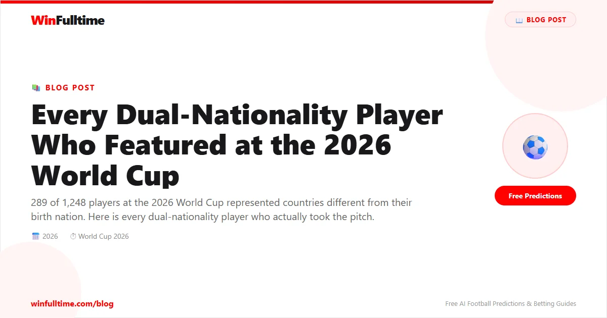

When the final whistle blew on the 2026 World Cup group stage, a staggering number had emerged: 289 of 1,248 players — 23.3% — represented countries different from their birth nation. France alone exported 76 born-and-raised French players to other nations' squads. Morocco fielded 19 players born outside their borders. DR Congo had 20. Curaçao's entire 26-man squad was born in the Netherlands.
The dual-nationality revolution is not coming. It happened. And this is the complete list of every player who lived it on the world's biggest stage.
The spike in nationality switches is directly traceable to FIFA's 2020 eligibility reform. Under the old rules, once a player made a single competitive senior appearance for a country, they were locked in for life. The new rules allow players to switch national teams if they have played fewer than three senior competitive matches, at least three years have passed since their last appearance, and they held the second nationality at the time of their first appearance. The window created by these rules opened a floodgate.
Dozens of players who had made early-career appearances for European youth teams suddenly had a second chance. They could switch to the country of their parents or grandparents without needing special permission from FIFA. The result has been a dramatic redistribution of talent from Europe's traditional powers to nations in Africa, Asia, and the Caribbean.
• 289 of 1,248 players (23.3%) represented a country different from their birth nation
• France was the world's #1 talent exporter — 76 French-born players wore other nations' jerseys
• Morocco had 19 of 26 squad members born abroad (mostly Spain, France, Netherlands)
• DR Congo had 20 foreign-born players — the most outside Curaçao
• Curaçao made history with an entirely Netherlands-born squad
• Haiti fielded 12 French-born players, nearly half their roster
• Algeria had 13+ French-born players including Luca Zidane (son of Zinedine)
• Senegal had 10 French-born players including captain Koulibaly
Morocco's squad was the most diaspora-heavy non-Curaçao team. 19 of 26 players were born in Europe, mostly in France, Spain, and the Netherlands. Many were key starters in their quarter-final run.
| Player | Born In | Position | Club | Notes |
|---|---|---|---|---|
| Achraf Hakimi (C) | Spain | RB | PSG | Captain. Spain youth → Morocco. Best RB in the world |
| Brahim Díaz | Spain | FW | Real Madrid | Spain youth → Morocco. AFCON 2025 top scorer |
| Noussair Mazraoui | Netherlands | RB/LB | Man United | Netherlands youth → Morocco |
| Sofyan Amrabat | Netherlands | MF | Real Betis | Netherlands U17-U19 → Morocco. 2022 semi-final star |
| Bilal El Khannouss | Belgium | MF | VfB Stuttgart | Born in Belgium to Moroccan parents |
| Nayef Aguerd | France | DF | Marseille | Born in France |
| Issa Diop | France | DF | Fulham | Born in France |
| Chadi Riad | Spain | DF | Crystal Palace | Born in Spain |
| Anass Salah-Eddine | Netherlands | DF | Roma | Born in Netherlands |
| Ayyoub Bouaddi | France | MF | Lille | Switched from France youth May 2026. Breakout star |
| Soufiane Rahimi | France | FW | Al-Ain | Born in France. 2 goals at tournament |
| Zakaria El Ouahdi | Belgium | DF | Genk | Born in Belgium |
| Redouane Halhal | Belgium | DF | Mechelen | Born in Belgium |
| Neil El Aynaoui | Spain | MF | Roma | Born in Spain |
| Chemsdine Talbi | Belgium | FW | Sunderland | Born in Belgium |
| Youssef Belammari | Netherlands | DF | Al-Ahly | Born in Netherlands |
| Samir El Mourabet | France | MF | Strasbourg | Born in France |
| Yassine Gessime | France | MF | Strasbourg | Born in France |
| Ismael Saibari | Morocco | MF | PSV | Scored fastest goal of tournament (71st second vs Scotland) |
Algeria's squad was built almost entirely on French-born diaspora talent. 13 of their squad members were born in France, including the son of legend Zinedine Zidane.
| Player | Born In | Position | Club | Notes |
|---|---|---|---|---|
| Riyad Mahrez (C) | France | FW | Al-Ahli | Captain. Most decorated African player in history. 2 goals |
| Luca Zidane | France | GK | Granada | Son of Zinedine Zidane. Switched from France 2025. Played vs Argentina |
| Rayan Aït-Nouri | France | DF | Man City | Born in France to Algerian parents |
| Ramy Bensebaini | France | DF | Dortmund | Born in France |
| Houssem Aouar | France | MF | Al-Ittihad | Born in France. Former Lyon star |
| Nabil Bentaleb | France | MF | Lille | Born in France |
| Farès Chaïbi | France | MF | Frankfurt | Born in France |
| Hicham Boudaoui | France | MF | Nice | Born in France |
| Ramiz Zerrouki | Netherlands | MF | Twente | Born in Netherlands to Algerian parents |
| Amine Gouiri | France | FW | Marseille | Born in France |
| Amine Gouiri | France | FW | Marseille | Born in France |
| Anis Hadj Moussa | France | FW | Feyenoord | Born in France |
| Aissa Mandi | France | DF | Lille | 116 caps. Record appearance holder |
| Ismaël Bennacer | France | MF | Dinamo Zagreb | Born in France |
Senegal's squad featured 10 French-born players, including their captain and several key attackers.
| Player | Born In | Position | Club | Notes |
|---|---|---|---|---|
| Kalidou Koulibaly (C) | France | DF | Al-Hilal | Captain. Born in France to Senegalese parents |
| Nicolas Jackson | France | FW | Bayern Munich | Born in France |
| Moussa Niakhaté | France | DF | Lyon | Born in France |
| Krépin Diatta | France | MF | Monaco | Born in France |
| Iliman Ndiaye | France | FW | Everton | France U20 → Senegal. Dynamic forward |
| Ismaïla Sarr | France | FW | Crystal Palace | Born in France |
| Assane Diao | Spain | FW | Como | Born in Spain to Senegalese parents |
| Ibrahim Mbaye | France | FW | PSG | Switched from France youth |
| El Hadji Malick Diouf | Senegal | DF | West Ham | Born in Senegal, raised in France |
| Yehvann Diouf | France | GK | Nice | Born in France |
DR Congo had the most foreign-born players of any African nation — 20 of their 26 squad members were born abroad, mostly in France, Belgium, England, and Switzerland.
| Player | Born In | Position | Club | Notes |
|---|---|---|---|---|
| Aaron Wan-Bissaka | England | DF | West Ham | England youth → DR Congo. Key starter |
| Axel Tuanzebe | England | DF | Burnley | England youth → DR Congo |
| Yoane Wissa | France | FW | Newcastle | 3 goals — tournament breakout star |
| Gaël Kakuta | France | FW | AEL | Former Chelsea youth |
| Arthur Masuaku | France | DF | Lens | Born in France |
| Gédéon Kalulu | France | DF | Aris Limassol | Born in France |
| Dylan Batubinsika | France | DF | AEL | Born in France |
| Steve Kapuadi | France | DF | Widzew Łódź | Born in France |
| Samuel Moutoussamy | France | MF | Atromitos | Born in France |
| Nathanaël Mbuku | France | FW | Montpellier | Born in France |
| Simon Banza | France | FW | Al-Jazira | Born in France |
| Lionel Mpasi | France | GK | Le Havre | Born in France |
| Noah Sadiki | Belgium | MF | Sunderland | Born in Belgium |
| Ngal'ayel Mukau | Belgium | MF | Lille | Born in Belgium |
| Joris Kayembe | Belgium | DF | Genk | Born in Belgium |
| Théo Bongonda | Belgium | FW | Spartak Moscow | Born in Belgium |
| Charles Pickel | Switzerland | MF | Espanyol | Born in Switzerland |
| Timothy Fayulu | Switzerland | GK | Noah | Born in Switzerland |
| Matthieu Epolo | Belgium | GK | Standard Liège | Born in Belgium |
| Aaron Tshibola | England | MF | Kilmarnock | Born in England |
Haiti fielded 12 French-born players, nearly half their entire roster.
| Player | Born In | Position | Club | Notes |
|---|---|---|---|---|
| Jean-Ricner Bellegarde | France | MF | Wolves | Born in France |
| Wilson Isidor | France | FW | Sunderland | Born in France |
| Lenny Joseph | France | FW | Ferencváros | Switched from France |
| Dominique Simon | France | MF | Tatran Presov | Switched from France |
| Josue Casimir | France | FW | Auxerre | Born in France |
| Yassin Fortune | France | MF | Vizela | Born in France |
| Carlens Arcus | France | DF | Angers | Born in France |
| Duke Lacroix | France | DF | Colorado Springs | Born in France |
| Martin Experience | France | DF | Nancy | Born in France |
| Jean-Kevin Duverne | France | DF | KAA Gent | Born in France |
| Ricardo Ade | Ecuador | DF | LDU Quito | Born in Ecuador to Haitian parents |
| Keeto Thermoncy | France | DF | Young Boys | Born in France |
Curaçao made history as the smallest nation to qualify for a World Cup — with an entirely Netherlands-born squad. All 26 players were born in the Netherlands.
| Player | Born In | Position | Club | Notes |
|---|---|---|---|---|
| Tahith Chong | Netherlands | FW/MF | Sheffield Utd | Netherlands youth → Curaçao. Made WC debut |
| Leandro Bacuna | Netherlands | MF | İğdır | Born in Netherlands |
| Juninho Bacuna | Netherlands | MF | Volendam | Born in Netherlands |
| Riechedly Bazoer | Netherlands | DF | Free agent | Born in Netherlands |
| Joshua Brenet | Netherlands | DF | Kayserispor | Born in Netherlands |
| Armando Obispo | Netherlands | DF | PSV | Born in Netherlands |
| Eloy Room | Netherlands | GK | Miami FC | Veteran GK. Born in Netherlands |
| Sontje Hansen | Netherlands | FW | Middlesbrough | Born in Netherlands |
| Shurandy Sambo | Netherlands | DF | Sparta Rotterdam | Born in Netherlands |
| Jurgen Locadia | Netherlands | FW | Miami FC | Born in Netherlands |
Plus 16 more squad members all born in the Netherlands.
| Player | Born In | Position | Club | Notes |
|---|---|---|---|---|
| Scott McTominay | England | MF | Napoli | Qualifies via father. Born in Lancaster |
| Che Adams | England | FW | Torino | Born in Leicester. Qualifies via parents |
| Angus Gunn | England | GK | Norwich | England youth → Scotland |
| Tyler Fletcher | England | — | — | Son of Darren Fletcher |
| Jack Fletcher | England | — | — | Son of Darren Fletcher |
| Player | Born In | Position | Club | Notes |
|---|---|---|---|---|
| Declan Rice | Ireland | MF | Arsenal | Ireland U21 (3 senior caps) → England. Key starter |
| Marc Guéhi | Ivory Coast | DF | Man City | Born in Abidjan. Moved to London aged 1 |
| Player | Born In | Position | Club | Notes |
|---|---|---|---|---|
| Erling Haaland | England | FW | Man City | Born in Leeds while father played for Leeds. 7 goals at tournament |
| Player | Born In | Position | Club | Notes |
|---|---|---|---|---|
| Giovanni Reyna | England | MF | Dortmund | Born in Sunderland while father Claudio Reyna played there |
| Player | Born In | Position | Club | Notes |
|---|---|---|---|---|
| Obed Vargas | USA | MF | Atlético Madrid | Born in Alaska to Mexican parents. USA youth → Mexico |
| Bryan Gutiérrez | USA | MF | Guadalajara | Born in Chicago to Mexican parents |
| Player | Born In | Position | Club | Notes |
|---|---|---|---|---|
| Zidane Iqbal | England | MF | Utrecht | Man United academy. England youth → Iraq |
| Ahmed Qasem | Sweden | MF | Nashville SC | Switched from Sweden May 2026 |
| Player | Born In | Position | Club | Notes |
|---|---|---|---|---|
| Ermin Mahmic | Austria | MF | — | Switched from Austria May 2026. Scored 2 goals at tournament |
| Player | Born In | Position | Club | Notes |
|---|---|---|---|---|
| Ange-Yoan Bonny | France | FW | Inter Milan | France youth → Ivory Coast. Approved May 2026 |
| Player | Born In | Position | Club | Notes |
|---|---|---|---|---|
| Haissem Hassan | France | FW | — | France U17/U18. Switched to Egypt |
| Player | Born In | Position | Club | Notes |
|---|---|---|---|---|
| Cristian Volpato | Italy | MF | — | Switched from Italy to Australia in 2026 |
| Player | Born In | Position | Club | Notes |
|---|---|---|---|---|
| Dennis Eckert | Germany | FW | — | Switched from Germany to Iran in 2026 |
| Player | Born In | Position | Club | Notes |
|---|---|---|---|---|
| CJ Dos Santos | USA | GK | — | USA youth → Cape Verde |
| Player | Born In | Position | Club | Notes |
|---|---|---|---|---|
| Owen Goodman | England | GK | — | Born in London. England youth → Canada |
| Country | Players Lost | Top Destination |
|---|---|---|
| France | 76 | Algeria, Morocco, Senegal, Haiti, DR Congo |
| Netherlands | 30+ | Morocco, Curaçao, Suriname, Algeria |
| England | 10+ | Scotland, DR Congo, Ghana, Jamaica, Iraq |
| Belgium | 8+ | Morocco, DR Congo |
| Spain | 5+ | Morocco |
| Portugal | 4+ | Cape Verde, Angola, Mozambique |
Not everyone is comfortable with the trend. Critics argue that the mass recruitment of diaspora players undermines the traditional link between a national team and its domestic football culture. When a team like Curaçao fields 26 players who all play in the Netherlands, what does"Curaçaoan football" actually mean?
"There is a risk that national teams become disconnected from the countries they represent," said Dr. Christina Anderson, a sports sociologist at the University of Leicester. "Fans want to see players who have grown up in their culture, who understand the local context, who are part of the community. When the entire team is assembled from abroad, something is lost."
But the players themselves see it differently. For Haaland, born in Leeds but representing Norway. For Hakimi, born in Madrid but captaining Morocco. For Zidane, born in France but wearing Algeria's colours — the decision was never about convenience. It was about identity.
And the numbers speak for themselves: 289 players, 23.3% of the entire tournament, chose a different flag. The dual-nationality revolution did not just change international football. It is international football now.
Diaspora-heavy squads tend to perform above expectations at major tournaments. Morocco's semi-final run in 2022 and their 2026 quarter-final were driven almost entirely by European-born players. When analysing matches, consider that teams with strong diaspora pipelines often have higher individual quality than their FIFA ranking suggests.
Get free daily predictions and analysis for the entire 2026 tournament.
Generate optimized accumulator combinations from today's data-driven predictions. Set your target odds and get instant ticket suggestions.
Pro Ticket Builder →